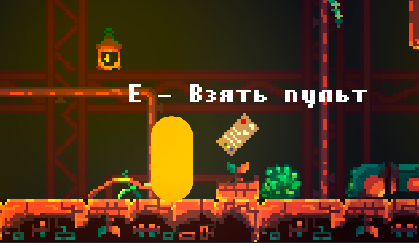
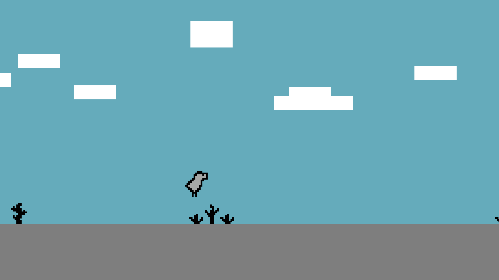

Core Escape
Добавлен пульт управления комнатами, теперь при переходе между комнатами, соседние будут меняться. Учитывая обстоятельства нужно запоминать изменения в комнатах чтобы понять, как найти выход. Изменения будут происходить только если подобрать пульт, без него комнаты остаються в одном состоянии, что тоже может быть полезно, поэтому не спешите устраивать хаус.
Core Escape
Мы добавили систему интерактивного освещения. Теперь факелы, лампы и некоторые объекты влияют на видимость игрока и атмосферу комнат. В тёмных зонах стало сложнее ориентироваться, зато внимательные игроки смогут замечать скрытые проходы и детали окружения, которые раньше терялись в темноте.
Dinosaur Run
Мы обновили систему генерации препятствий и переработали темп игры. Теперь препятствия появляются разнообразнее, а скорость увеличивается плавнее, чтобы игрок успевал привыкнуть к нарастающему хаосу. Добавлены новые объекты окружения, которые делают забеги менее предсказуемыми и чуть более напряжёнными.

Dinosaur Run
В игре появилась система рекордов и отображение лучшего результата. Теперь можно отслеживать собственный прогресс и пытаться побить предыдущие достижения. Также были улучшены анимации персонажа и исправлены ошибки столкновений, из-за которых некоторые поражения выглядели слишком жестокими даже для пиксельного динозавра